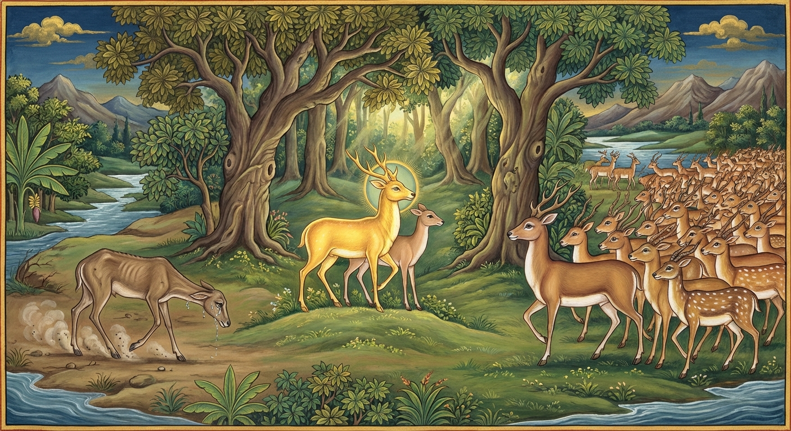

1. ලක්ඛණමිග ජාතකය (11)
“හොති සීලවතං අත්ථො” (සිල්වතුන්ට අභිවෘද්ධිය වේ) යන මේ ගාථාව බුදුරජාණන් වහන්සේ රජගහ නුවර ඇසුරු කොට වේළුවනයෙහි වැඩවසන සමයෙහි දේවදත්ත තෙරුන් අරබයා දේශනා කළ සේක. දේවදත්තයන්ගේ කථා පුවත දුනුවායන් යෙදවීමේ සිට ‘ඛණ්ඩහාල ජාතකයෙහි’ එන්නේය. ධනපාල ඇතු මෙහෙයවීම දක්වා කථාව ‘චුල්ල හංස ජාතකයෙහි’ එන්නේය. පොළොව ගිලීම දක්වා කථාව දොළොස් වන නිපාතයෙහි ‘සමුද්දවාණිජ ජාතකයෙහි’ එන්නේය.
එක් කලෙක දේවදත්ත තෙම පස් වරයක් ඉල්ලා එය නොලැබූ කල සංඝයා භේද කොට පන්සියයක් භික්ෂූන් රැගෙන ගයා ශීර්ෂයෙහි වාසය කරයි. ඉක්බිති ඒ භික්ෂූන්ගේ ඤාණය මෝරා ගියේය. බුදුරජාණන් වහන්සේ එය දැන අග්ර ශ්රාවකයන් දෙනම අමතා, “සාරිපුත්රයෙනි, ඔබව ඇසුරු කළ පන්සියයක් භික්ෂූහු දේවදත්තයන්ගේ ලබ්ධිය රුචි කොට ඔහු සමඟ ගියහ. දැන් ඔවුන්ගේ ඤාණය පරිපාකයට පැමිණ ඇත. ඔබ බොහෝ භික්ෂූන් සමඟ එහි ගොස් ඔවුන්ට ධර්මය දේශනා කොට, ඒ භික්ෂූන් මාර්ග ඵලයන්හි පිහිටුවා, අවබෝධ කරවාගෙන රැගෙන එන්න” යැයි වදාළ සේක. ඒ තෙරවරු එලෙසම ගොස් ඔවුනට දහම් දෙසා මාර්ග ඵල අවබෝධ කරවා, පසු දින අරුණු නැගෙන වේලාවෙහි ඒ භික්ෂූන් ද රැගෙන වේළුවනයටම පැමිණියහ. සැරියුත් තෙරුන් භාග්යවතුන් වහන්සේ වැඳ සිටි කල්හි, භික්ෂූහු තෙරුන්ට ප්රශංසා කොට බුදුරදුන්ට මෙසේ කීහ: “ස්වාමීනි, අපගේ වැඩිමහල් සොහොයුරු දම් සෙනෙවි සැරියුත් තෙරණුවෝ පන්සියයක් භික්ෂූන් පිරිවරාගෙන පැමිණෙන විට ඉතා බබලයි. දේවදත්ත තෙම පිරිහුණු පිරිවර ඇත්තෙක් විය.” එවිට බුදුරජාණන් වහන්සේ, “මහණෙනි, සාරිපුත්ර තෙම ඤාති සමූහයා පිරිවරාගෙන පැමිණ බැබලෙන්නේ දැන් පමණක් නොවේ, පෙරත් බැබළුණේමය. දේවදත්ත තෙම පිරිසගෙන් පිරිහුණේ දැන් පමණක් නොවේ, පෙරත් පිරිහුණේමය” යැයි වදාළ සේක. භික්ෂූන් වහන්සේලා ඒ අර්ථය හෙළිදරව් කරනු පිණිස භාග්යවතුන් වහන්සේගෙන් ඉල්ලා සිටියහ. භාග්යවතුන් වහන්සේ භවයෙන් වැසී තිබුණු ඒ කාරණය ප්රකට කළ සේක.
අතීතයෙහි මගධ රට රජගහ නුවර එක් මගධ රජෙක් රාජ්යය කළේය. එකල බෝසත්හු මුව ජාතියෙහි උපත ලබා වැඩිවිය පැමිණ, මුවන් දහසක් පිරිවරාගෙන මහවනයෙහි වාසය කළහ. ඔහුට ‘ලක්ඛණ’ සහ ‘කාල’ නමින් පුතුන් දෙදෙනෙක් වූහ. ඔහු තමා මහලු වූ කල්හි, “දරුවනි, මම දැන් මහලු වෙමි. ඔබලා මේ සමූහයා පරිහරණය කරව් (රැකබලා ගනිව්)” යැයි පවසා පුතුන් දෙදෙනාට පන්සියය බැගින් පවරා දුන්නේය. එතැන් පටන් ඒ දෙදෙනා මුව සමූහයා රැකබලා ගනිති. මගධ රටෙහි ගොයම් පැසෙන කාලයෙහි වනය මුවන්ට උවදුරු සහිත වෙයි. මිනිස්සු ගොයම් කන මුවන් මැරීම පිණිස තැන් තැන්වල:
- බොරු වළවල් හාරති,
- උල් සිටුවති,
- ගල් යන්ත්ර (උගුල්) අටවති,
- මරුවැල් ආදී උගුල් අටවති.
මේ නිසා බොහෝ මුවෝ විනාශයට පත්වෙති. බෝසත්හු ඒ උවදුරු සහිත කාලය බව දැන පුතුන් දෙදෙනා කැඳවා, “දරුවනි, මේ ගොයම් පැසෙන කාලයයි. බොහෝ මුවෝ විනාශ වෙති. අපි දැන් මහලුය. අපි කෙසේ හෝ එක් තැනක රැඳී ජීවත් වන්නෙමු. ඔබලා ඔබගේ මුව සමූහයා රැගෙන වනයෙහි පර්වත පාමුලට ගොස්, ගොයම් කපා පාගා ගත් පසු ආපසු පැමිණෙන්න” යැයි කීහ. ඒ දෙදෙනා “යහපතැ”යි පියාගේ වචනය අසා පිරිවර සහිතව නික්මුණහ. එහෙත් මිනිස්සු මුවන්ගේ ගමන් මාර්ගය ගැන, “මේ කාලයෙහි මුවන් පර්වතයට නගිති, මේ කාලයෙහි බසිති” යැයි දනිති. ඔවුහු තැන් තැන්වල සැඟවුණු ස්ථානවල රැක සිට බොහෝ මුවන් විද මරති.
‘කාල’ මුවා තමාගේ මෝඩකම නිසා “මේ වේලාවේ යා යුතුය, මේ වේලාවේ නොයා යුතුය” යැයි නොදැන මුව රැළ රැගෙන උදය වරුවෙහිත්, සවසත්, රාත්රියෙහිත්, අළුයම ද ගම් දොරින් ගමන් කරයි. එහි පදිංචි මිනිස්සු තැන් තැන්වල ප්රසිද්ධියේ සිට ද, සැඟවී සිට ද බොහෝ මුවන් විනාශයට පත් කරති. මෙසේ ඔහු තම මෝඩකම නිසා බොහෝ මුවන් විනාශ කරවාගෙන සුළු පිරිසක් සමඟ වනයට පිවිසියේය. නමුත් ‘ලක්ඛණ’ මුවා පණ්ඩිතය, දක්ෂය, උපාය දන්නේය. “මේ වේලාවෙහි යා යුතුය, මේ වේලාවෙහි නොයා යුතුය” යැයි දනී. ඔහු ගම් දොරින් ද නොයයි, දවල් කාලයේ ද නොයයි, සන්ධ්යාවෙහි ද නොයයි, අළුයම ද නොයයි; මුව රැළ රැගෙන මධ්යම රාත්රියෙහිම ගමන් කරයි. එබැවින් එක මුවකුදු විනාශ නොකොට වනයට පිවිසියේය. ඔවුහු එහි සිව් මසක් වාසය කොට, ගොයම් කපා පාගා ගත් පසු පර්වතයෙන් බැස්සාහ.

කාල මුවා ආපසු එන විට ද පෙර කී ක්රමයෙන්ම ඉතිරි මුවන් ද විනාශයට පමුණුවා තනිවම පැමිණියේය. ලක්ඛණ මුවා වනාහි එක මුවකු ද විනාශ නොකොට පන්සියයක් මුවන් පිරිවරා මව්පියන් වෙත පැමිණියේය. බෝසත්හු එන්නා වූ පුතුන් දෙදෙනා දැක මුව රැළ සමඟ සාකච්ඡා කරමින් මේ ගාථාව පැවසූහ.
“සිල්වත් වූ, පිළිසඳර පැවතුම් ඇති අයට අභිවෘද්ධිය සැලසේ. ඤාති සමූහයා විසින් පිරිවරාගෙන එන ලක්ඛණ දෙස බලන්න. එසේම නෑයන්ගෙන් පිරිහී එන මේ කාල දෙස ද බලන්න.”
එහි “සීලවතං” යනු සැප එළවන්නා වූ ස්වභාවය ඇති බැවින් සිල්වතුන්ට හෙවත් සදාචාර සම්පන්න වූවන්ට යන්නයි. “අත්ථො” යනු දියුණුවයි. “පටිසන්ථාර වුත්තිනං” යනු ධර්ම ප්රතිසන්ථාරය සහ ආමිස ප්රතිසන්ථාරය යන පැවතුම් ඇති අයට යන්නයි. මෙහිලා පවින් වැළැක්වීම, අවවාද අනුශාසනා කිරීම් වශයෙන් ධර්ම ප්රතිසන්ථාරය ද; සිව්පසය ලබාදීම, ගිලන් උපස්ථානය, දැහැමි රැකවරණය සැලසීම වශයෙන් ආමිස ප්රතිසන්ථාරය ද දත යුතුය. මෙය කියන ලද්දේ වෙයි: මේ දෙවැදෑරුම් පිළිසඳරෙහි යෙදුණු, සදාචාර සම්පන්න පණ්ඩිතයන්ට දියුණුව ඇති වෙයි. දැන් ඒ දියුණුව පෙන්වීමට පුත්රයා සහ මව අමතා කියන්නාක් මෙන් “ලක්ඛණං පස්ස” (ලක්ඛණ දෙස බලව) යනාදිය කීහ. මෙහි සංක්ෂිප්ත අදහස මෙයයි: සිරිත් විරිත් සහ සුහද පිළිසඳර පැවැත්මෙන් යුත් තම පුත්රයා එක් මුවකුවත් විනාශ නොකරගෙන ඤාති සමූහයා පිරිවරා, පෙරටු කොටගෙන එන අයුරු බලන්න. එසේම ඒ ආචාර සමාචාර සහ පිළිසඳර ගුණාංගවලින් තොර වූ, මෝඩ නුවණ ඇති “අථ පස්සසි මං කාළං” (මේ කාල දෙස බලන්න); එක් ඤාතියකු හෝ ඉතිරි නොකරගෙන ඤාතීන්ගෙන් හාත්පසින්ම පිරිහී තනිවම එන අයුරු බලන්න. මෙසේ බෝසතාණෝ තම පුත්රයා දැක සතුටුව, ආයු ඇති තාක් කල් සිට කම් වූ පරිදි මියපරලොව ගියහ.
බුදුරජාණන් වහන්සේ ද, “මහණෙනි, සැරියුත් තෙරණුවෝ ඤාතීන් පිරිවරා බැබළුණේ දැන් පමණක් නොවේ, පෙරත් බැබළුණේමය. දේවදත්ත තෙම පිරිවරින් පිරිහුණේ දැන් පමණක් නොවේ, පෙරත් පිරිහුණේමය” යි මෙම ධර්ම දේශනාව දක්වා, කථා වස්තූන් දෙක ගළපා ජාතකය සමාප්ත කළ සේක. “එකල්හි කාල මුවා වූයේ දේවදත්තය. ඔහුගේ පිරිස දේවදත්ත පිරිසම වූහ. ලක්ඛණ මුවා වූයේ සාරිපුත්රය. ඔහුගේ පිරිස බුදු පිරිසය. මව රාහුල මාතාව වූවාය. පියා වනාහි මම ම වීමි.”
ලක්ඛණ මිග ජාතක වර්ණනාව පළමුවැන්නයි.